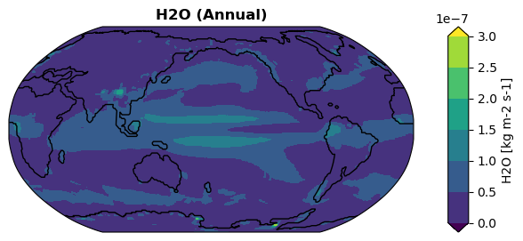

Registering New Diagnostic Functions#
1
%load_ext autoreload
%autoreload 2
import os
os.chdir('/glade/u/home/fengzhu/Github/x4c/docsrc/notebooks')
import x4c
print(x4c.__version__)
2025.6.22
23
dirpath = '/glade/campaign/univ/ubrn0018/fengzhu/CESM_output/timeseries/b.e13.B1850C5.ne16_g16.icesm131_d18O_fixer.Miocene.3xCO2.005'
case = x4c.Timeseries(dirpath, grid_dict={'atm': 'ne16np4'})
>>> case.root_dir: /glade/campaign/univ/ubrn0018/fengzhu/CESM_output/timeseries/b.e13.B1850C5.ne16_g16.icesm131_d18O_fixer.Miocene.3xCO2.005
>>> case.path_pattern: comp/proc/tseries/*/casename.hstr.vn.timespan.nc
>>> case.grid_dict: {'atm': 'ne16np4', 'ocn': 'g16', 'lnd': 'ne16np4', 'rof': 'ne16np4', 'ice': 'g16'}
>>> case.casename: b.e13.B1850C5.ne16_g16.icesm131_d18O_fixer.Miocene.3xCO2.005
>>> case.vars_info created
A 1st order variable that exists under the CESM Postprocessing Timeseries directory#
4
spell = 'TS'
case.calc(spell)
case.diags[spell]
>>> Spell `TS` is already calculated and the calculation is skipped.
4
<xarray.DataArray 'TS' (time: 600, ncol: 13826)> Size: 33MB
array([[30.723846, 30.15387 , 29.340027, ..., 20.610352, 17.8833 ,
18.761658],
[31.421326, 31.069 , 30.561584, ..., 19.588074, 17.21759 ,
18.28897 ],
[31.425201, 31.07251 , 30.54779 , ..., 19.613098, 18.46637 ,
19.39978 ],
...,
[25.155579, 24.095459, 22.823944, ..., 29.183075, 27.860046,
28.439423],
[27.179352, 26.204254, 24.977203, ..., 25.29721 , 22.786072,
23.526276],
[29.186981, 28.433838, 27.424072, ..., 21.56839 , 19.447754,
20.136566]], shape=(600, 13826), dtype=float32)
Coordinates:
* time (time) object 5kB 8951-01-31 00:00:00 ... 9000-12-31 00:00:00
lat (ncol) float64 111kB -35.26 -35.98 -37.07 ... 37.91 37.91 36.74
lon (ncol) float64 111kB 315.0 316.6 319.1 320.6 ... 132.5 137.5 135.0
Dimensions without coordinates: ncol
Attributes:
units: °C
long_name: Surface temperature (radiative)
cell_methods: time: mean
path: /glade/campaign/univ/ubrn0018/fengzhu/CESM_output/timeseri...
gw: <xarray.DataArray 'area' (ncol: 13826)> Size: 111kB\narray...
lat: <xarray.DataArray 'lat' (ncol: 13826)> Size: 111kB\n[13826...
lon: <xarray.DataArray 'lon' (ncol: 13826)> Size: 111kB\n[13826...
comp: atm
grid: ne16np4A deduced variable based on 1st order variables#
5
spell = 'SST'
case.calc(spell)
case.diags[spell]
>>> case.ds["SST"] created
>>> case.diags["SST"] created
5
<xarray.DataArray 'SST' (time: 600, nlat: 384, nlon: 320)> Size: 295MB
array([[[nan, nan, nan, ..., nan, nan, nan],
[nan, nan, nan, ..., nan, nan, nan],
[nan, nan, nan, ..., nan, nan, nan],
...,
[nan, nan, nan, ..., nan, nan, nan],
[nan, nan, nan, ..., nan, nan, nan],
[nan, nan, nan, ..., nan, nan, nan]],
[[nan, nan, nan, ..., nan, nan, nan],
[nan, nan, nan, ..., nan, nan, nan],
[nan, nan, nan, ..., nan, nan, nan],
...,
[nan, nan, nan, ..., nan, nan, nan],
[nan, nan, nan, ..., nan, nan, nan],
[nan, nan, nan, ..., nan, nan, nan]],
[[nan, nan, nan, ..., nan, nan, nan],
[nan, nan, nan, ..., nan, nan, nan],
[nan, nan, nan, ..., nan, nan, nan],
...,
...
[nan, nan, nan, ..., nan, nan, nan],
[nan, nan, nan, ..., nan, nan, nan],
[nan, nan, nan, ..., nan, nan, nan]],
[[nan, nan, nan, ..., nan, nan, nan],
[nan, nan, nan, ..., nan, nan, nan],
[nan, nan, nan, ..., nan, nan, nan],
...,
[nan, nan, nan, ..., nan, nan, nan],
[nan, nan, nan, ..., nan, nan, nan],
[nan, nan, nan, ..., nan, nan, nan]],
[[nan, nan, nan, ..., nan, nan, nan],
[nan, nan, nan, ..., nan, nan, nan],
[nan, nan, nan, ..., nan, nan, nan],
...,
[nan, nan, nan, ..., nan, nan, nan],
[nan, nan, nan, ..., nan, nan, nan],
[nan, nan, nan, ..., nan, nan, nan]]],
shape=(600, 384, 320), dtype=float32)
Coordinates:
TLAT (nlat, nlon) float64 983kB -87.73 -87.72 -87.7 ... 72.52 72.52
TLONG (nlat, nlon) float64 983kB 341.6 342.9 344.2 ... 326.2 326.5 326.8
ULAT (nlat, nlon) float64 983kB -87.53 -87.52 -87.5 ... 72.64 72.64
ULONG (nlat, nlon) float64 983kB 343.5 344.8 346.1 ... 326.4 326.7 327.0
* time (time) object 5kB 8951-01-31 00:00:00 ... 9000-12-31 00:00:00
Dimensions without coordinates: nlat, nlon
Attributes:
long_name: Sea Surface Temperature
units: °C
grid_loc: 3111
cell_methods: time: mean z_t: mean
path: /glade/campaign/univ/ubrn0018/fengzhu/CESM_output/timeseri...
gw: <xarray.DataArray 'TAREA' (nlat: 384, nlon: 320)> Size: 98...
lat: <xarray.DataArray 'TLAT' (nlat: 384, nlon: 320)> Size: 983...
lon: <xarray.DataArray 'TLONG' (nlat: 384, nlon: 320)> Size: 98...
dz: <xarray.DataArray 'dz' ()> Size: 4B\n[1 values with dtype=...
comp: ocn
grid: g1624
spell = 'd18Op'
case.calc(spell)
case.diags[spell]
>>> d18Op is a supported derived variable.
>>> case.ds["PRECRC_H216Or"] created
>>> case.ds["PRECSC_H216Os"] created
>>> case.ds["PRECRL_H216OR"] created
>>> case.ds["PRECSL_H216OS"] created
>>> case.ds["PRECRC_H218Or"] created
>>> case.ds["PRECSC_H218Os"] created
>>> case.ds["PRECRL_H218OR"] created
>>> case.ds["PRECSL_H218OS"] created
>>> case.diags["d18Op"] created
24
<xarray.DataArray 'd18Op' (time: 600, ncol: 13826)> Size: 33MB
array([[-3.9242506, -4.0639043, -4.1208863, ..., -9.632945 , -8.070588 ,
-8.230329 ],
[-5.675137 , -5.547166 , -5.905688 , ..., -8.86035 , -8.010567 ,
-7.663846 ],
[-4.2343736, -4.4196844, -4.8832297, ..., -7.989228 , -7.1674585,
-6.616235 ],
...,
[-4.006505 , -4.380405 , -5.3446293, ..., -5.651295 , -5.3805113,
-5.291581 ],
[-3.416419 , -4.7590733, -4.9126744, ..., -8.602322 , -6.9465637,
-6.7592263],
[-3.531158 , -3.5579205, -3.6706924, ..., -8.005201 , -7.1768165,
-6.878078 ]], shape=(600, 13826), dtype=float32)
Coordinates:
* time (time) object 5kB 8951-01-31 00:00:00 ... 9000-12-31 00:00:00
lat (ncol) float64 111kB -35.26 -35.98 -37.07 ... 37.91 37.91 36.74
lon (ncol) float64 111kB 315.0 316.6 319.1 320.6 ... 132.5 137.5 135.0
Dimensions without coordinates: ncol
Attributes:
units: permil
long_name: Precipitation d18O
cell_methods: time: mean
path: /glade/campaign/univ/ubrn0018/fengzhu/CESM_output/timeseri...
gw: <xarray.DataArray 'area' (ncol: 13826)> Size: 111kB\narray...
lat: <xarray.DataArray 'lat' (ncol: 13826)> Size: 111kB\n[13826...
lon: <xarray.DataArray 'lon' (ncol: 13826)> Size: 111kB\n[13826...
comp: atm
grid: ne16np4User-defined derived variables#
25
x4c.diags.Registry.funcs
25
{'SST': <function x4c.diags.DiagCalc.get_SST(case, **kws)>,
'SSS': <function x4c.diags.DiagCalc.get_SSS(case, **kws)>,
'LST': <function x4c.diags.DiagCalc.get_LST(case, **kws)>,
'MLD': <function x4c.diags.DiagCalc.get_MLD(case, **kws)>,
'PRECT': <function x4c.diags.DiagCalc.get_PRECT(case, **kws)>,
'dD': <function x4c.diags.DiagCalc.get_dD(case, **kws)>,
'd18Op': <function x4c.diags.DiagCalc.get_d18Op(case, **kws)>,
'd18Osw': <function x4c.diags.DiagCalc.get_d18Osw(case, **kws)>,
'd18Oc': <function x4c.diags.DiagCalc.get_d18Oc(case, **kws)>,
'RESTOM': <function x4c.diags.DiagCalc.get_RESTOM(case, **kws)>,
'MOC': <function x4c.diags.DiagCalc.get_MOC(case, **kws)>,
'ICEFRAC': <function x4c.diags.DiagCalc.get_ICEFRAC(case, **kws)>,
'H2O': <function __main__.get_H2O(case, **kws)>}
26
@x4c.diags.F
def get_H2O(case, **kws):
case.load('PRECRC_H2Or', **kws)
case.load('PRECSC_H2Os', **kws)
case.load('PRECRL_H2OR', **kws)
case.load('PRECSL_H2OS', **kws)
h2o = case.ds['PRECRC_H2Or'].x.da + case.ds['PRECSC_H2Os'].x.da + case.ds['PRECRL_H2OR'].x.da + case.ds['PRECSL_H2OS'].x.da
h2o = h2o.where(h2o > 1e-18, 1e-18)
h2o.name = 'H2O'
h2o.attrs['long_name'] = 'H2O'
h2o.attrs['units'] = 'kg m-2 s-1'
return h2o
x4c.diags.Registry.funcs
26
{'SST': <function x4c.diags.DiagCalc.get_SST(case, **kws)>,
'SSS': <function x4c.diags.DiagCalc.get_SSS(case, **kws)>,
'LST': <function x4c.diags.DiagCalc.get_LST(case, **kws)>,
'MLD': <function x4c.diags.DiagCalc.get_MLD(case, **kws)>,
'PRECT': <function x4c.diags.DiagCalc.get_PRECT(case, **kws)>,
'dD': <function x4c.diags.DiagCalc.get_dD(case, **kws)>,
'd18Op': <function x4c.diags.DiagCalc.get_d18Op(case, **kws)>,
'd18Osw': <function x4c.diags.DiagCalc.get_d18Osw(case, **kws)>,
'd18Oc': <function x4c.diags.DiagCalc.get_d18Oc(case, **kws)>,
'RESTOM': <function x4c.diags.DiagCalc.get_RESTOM(case, **kws)>,
'MOC': <function x4c.diags.DiagCalc.get_MOC(case, **kws)>,
'ICEFRAC': <function x4c.diags.DiagCalc.get_ICEFRAC(case, **kws)>,
'H2O': <function __main__.get_H2O(case, **kws)>}
28
spell = 'H2O:ann'
case.calc(spell, timespan=(8901, 9000), recalculate=True)
case.diags[spell]
>>> H2O is a supported derived variable.
>>> case.ds["PRECRC_H2Or"] will be reloaded due to different paths.
>>> case.ds["PRECRC_H2Or"] created
>>> case.ds["PRECSC_H2Os"] will be reloaded due to different paths.
>>> case.ds["PRECSC_H2Os"] created
>>> case.ds["PRECRL_H2OR"] will be reloaded due to different paths.
>>> case.ds["PRECRL_H2OR"] created
>>> case.ds["PRECSL_H2OS"] will be reloaded due to different paths.
>>> case.ds["PRECSL_H2OS"] created
>>> Timespan: [8901-01-31 00:00:00, 9000-12-31 00:00:00]
>>> case.diags["H2O:ann"] created
28
<xarray.DataArray 'H2O' (time: 100, ncol: 13826)> Size: 6MB
array([[3.2436031e-08, 3.2029504e-08, 3.3239736e-08, ..., 6.1915671e-08,
7.3360034e-08, 7.6831476e-08],
[4.3094449e-08, 3.9509558e-08, 4.0895586e-08, ..., 7.6069632e-08,
7.6563857e-08, 8.0979220e-08],
[4.8572193e-08, 4.6255469e-08, 4.6900130e-08, ..., 6.2611662e-08,
6.3687779e-08, 7.1505802e-08],
...,
[4.9972602e-08, 4.8664834e-08, 4.9744781e-08, ..., 6.6670054e-08,
7.4954293e-08, 8.1129713e-08],
[4.0223568e-08, 3.6252263e-08, 3.7049467e-08, ..., 6.4540522e-08,
8.0180683e-08, 8.5970662e-08],
[4.0655792e-08, 3.9256889e-08, 3.9505519e-08, ..., 7.3763481e-08,
7.8176519e-08, 8.6220005e-08]], shape=(100, 13826), dtype=float32)
Coordinates:
lat (ncol) float64 111kB -35.26 -35.98 -37.07 ... 37.91 37.91 36.74
lon (ncol) float64 111kB 315.0 316.6 319.1 320.6 ... 132.5 137.5 135.0
* time (time) object 800B 8901-12-31 00:00:00 ... 9000-12-31 00:00:00
Dimensions without coordinates: ncol
Attributes:
units: kg m-2 s-1
long_name: H2O (Annual)
cell_methods: time: mean
path: ['/glade/campaign/univ/ubrn0018/fengzhu/CESM_output/timese...
gw: <xarray.DataArray 'area' (ncol: 13826)> Size: 111kB\ndask....
lat: <xarray.DataArray 'lat' (ncol: 13826)> Size: 111kB\ndask.a...
lon: <xarray.DataArray 'lon' (ncol: 13826)> Size: 111kB\ndask.a...
comp: atm
grid: ne16np418
fig, ax = case.plot(spell, regrid=True)
